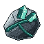
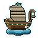

Quests
Current
Done 155
Tester · Sage Sovereign 3 · at the Starsea Launch
MAIN · the story
◆
The Lantern Run
Chapter 17 · tracked · leads to the Arrival Quay
step 1 of 2
DAILY · sect missions · each 20 contribution and 214 taels

Jadeironmine 0 / 4Kitchen dutycook 0 / 3
Daily activity 62 / 100
Next at 100: 15 spirit stones, 2 Spirit Jade
20
40
60
100
SIDE · 34 on offer, by where they are
Near you · Azure Expanse6▶
Companions2▶
Jade River Valley26▶
The Lantern Run
Main · Chapter 17
From Warden He, at the Starsea Launch

You are here
Starsea Launch
Arrival Quay
Lanternfall Harbor
the Lantern Run, by skiff
Go
Your chart ends at a field of lanterns. The ring has lit for you. Sail, and tell the harbour there who sent you.
➤Sail the Lantern Run from the Starsea Launch
○Report to Harbormaster Lin on the Arrival Quay
Rewards
Then the story goes on: Crystal and Jade
Untrack
Tracked quests show on the HUD with the same direction line; up to three at once.